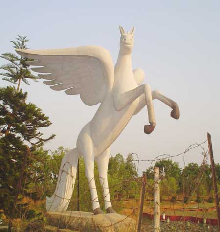
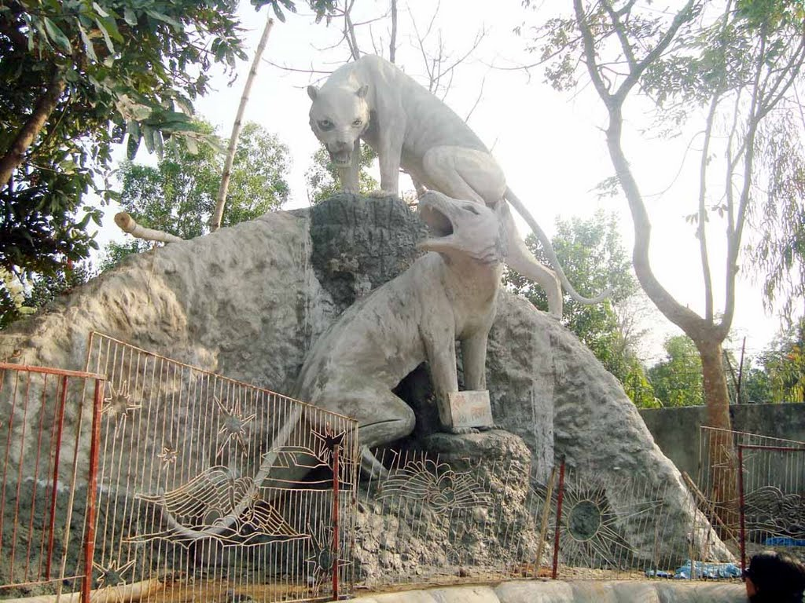
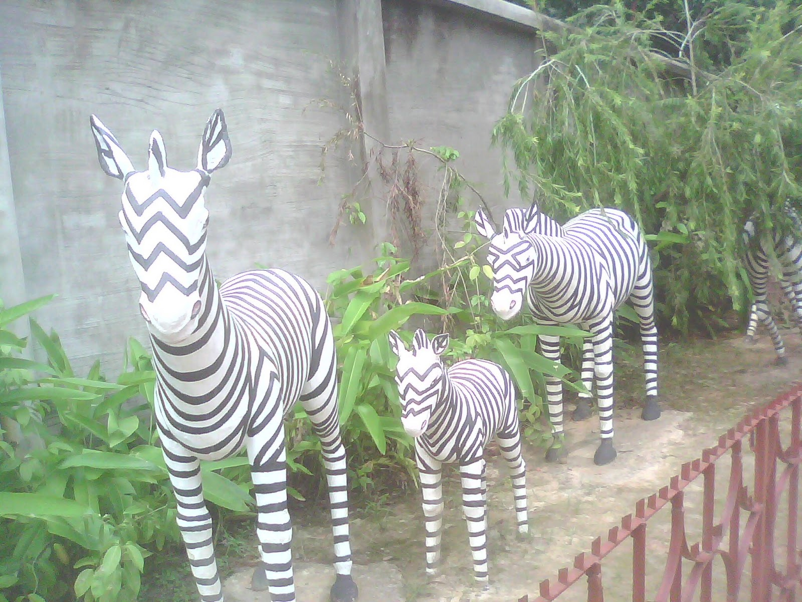

Beautiful Bangladesh
information of dhaka
Some images of beautiful places of dhaka



Under the Rangpur division (one of seven divisions) composed of eight districts of the northern Bangladesh, the District of Rangpur is bordered on the north by Nilphamari District, on the south by Gaibandha District, on the east by Kurigram, and on the west by Dinajpur district. Rangpur town is the divisional headquarter. The soil composition is mainly alluvial soil (80%) of the Teesta River basin, and the remaining is barind soil. The temperature ranges from 32 degrees Celsius to 11 degrees Celsius, and the annual rainfall averages 2931 mm.[3] Rangpur was conquered by the army of Raja Man Singh, a commander of the Mughal emperor, Akbar, in 1575, but it was only until 1686 that it was fully integrated into the Mughal Empire. Place names such as Mughalbasa ('Mughal locality') and Mughalhat ('Mughal market') bear testimony to the Mughal association and past of Rangpur and its hinterland. Later on, Rangpur passed under the control of "Sarker" of Ghoraghat. During the period of the British East India Company, the Sannyasi Rebellion took place.